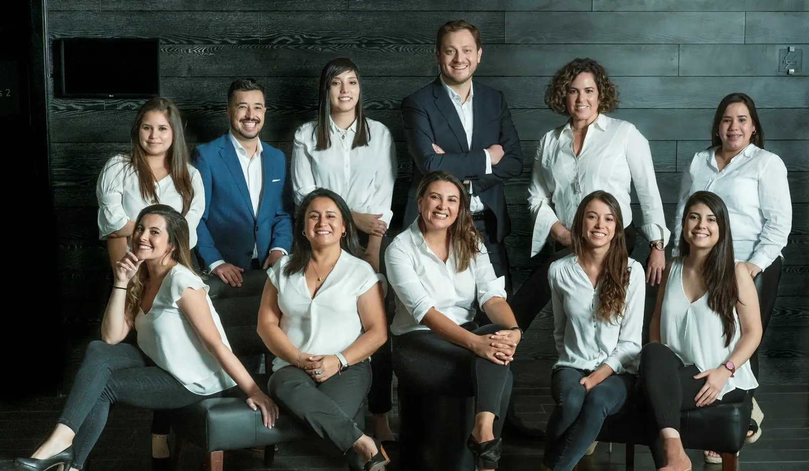
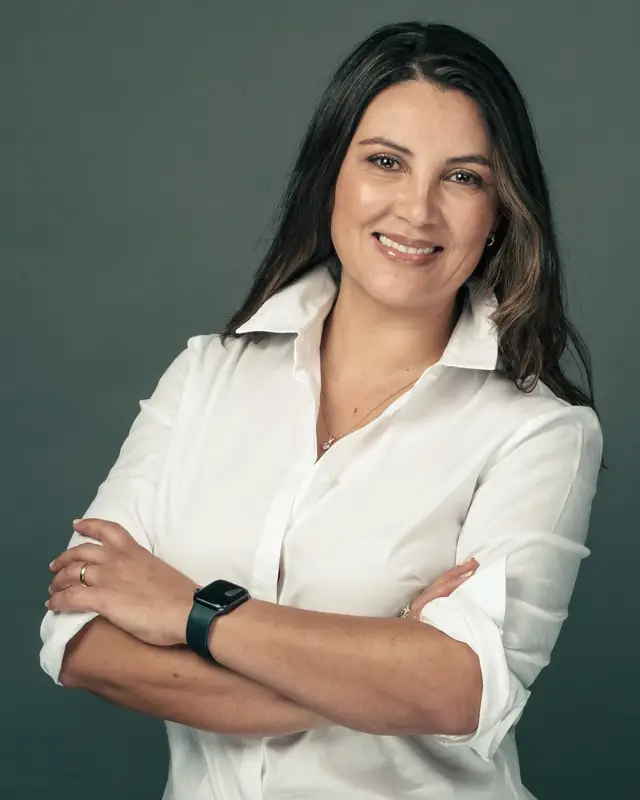
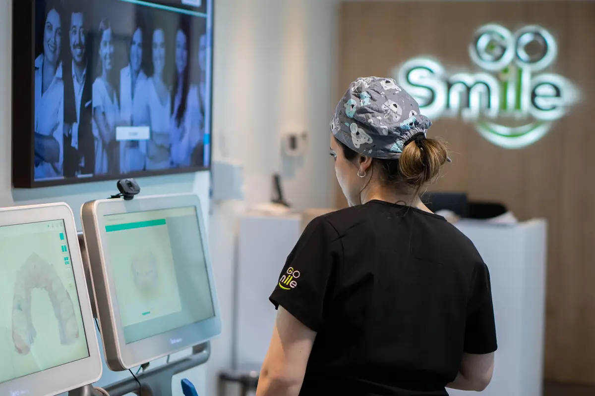
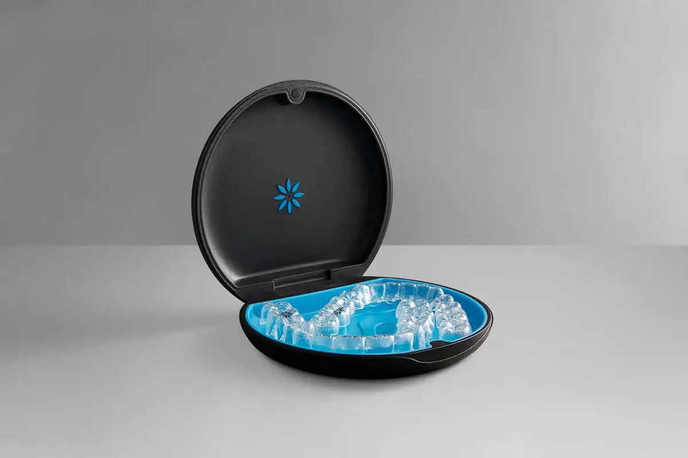
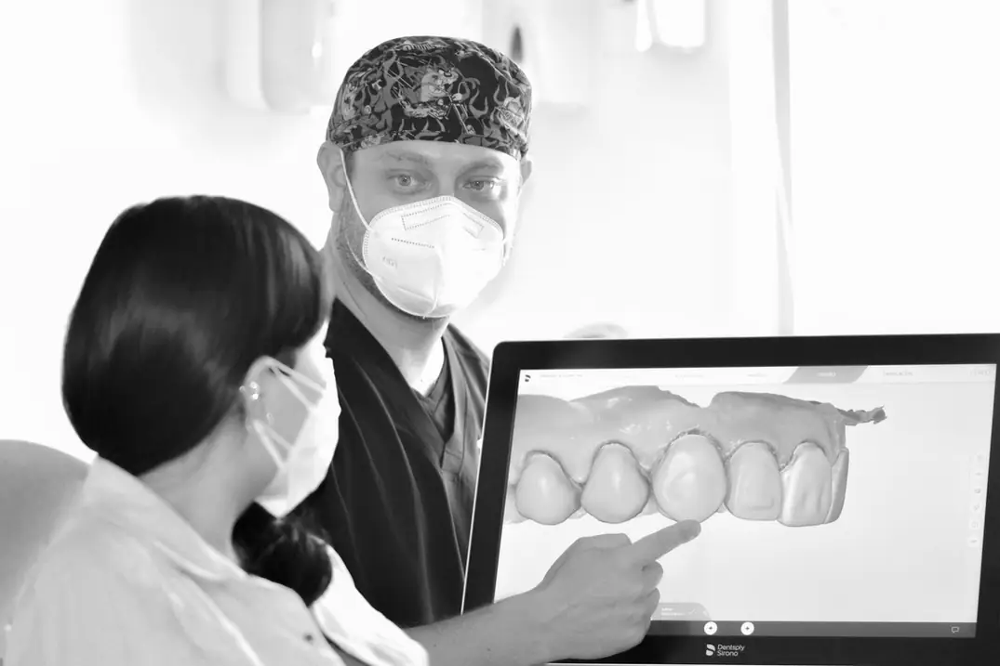
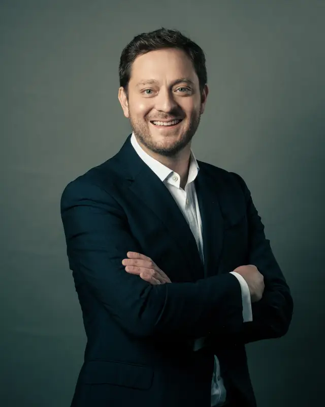
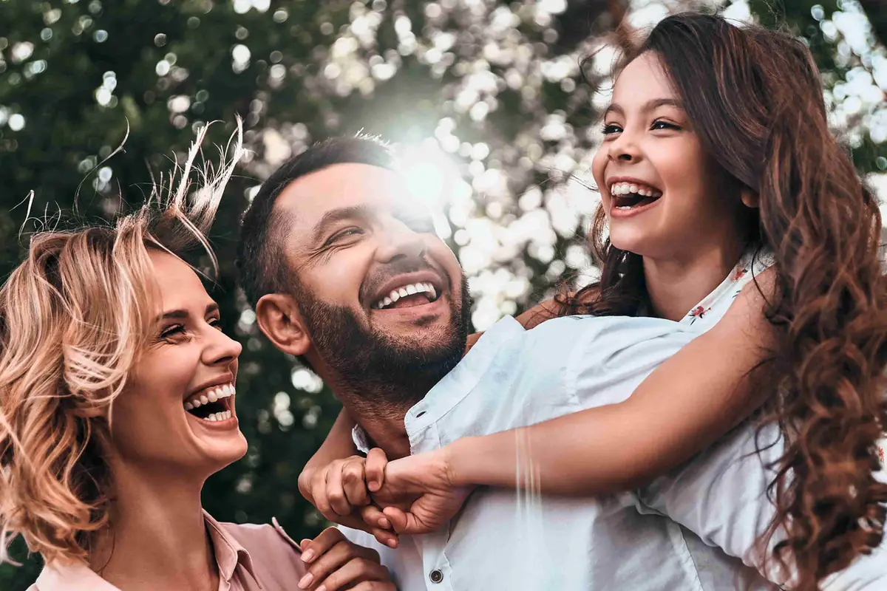
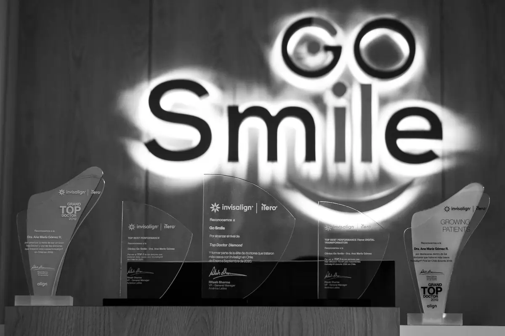

Sucursal
La Dehesa, Lo Barnechea
Av. La Dehesa 1201, Local 108 Oriente, Lo Barnechea.
- Lunes a viernes, 9:00 a 19:00
- Estacionamientos disponibles
- 5,0 en Google · 137 opiniones
Lo Barnechea · Chicureo
Un equipo liderado por la Dra. Ana María Gómez, Invisalign Diamond Elite Provider y speaker trainer de Invisalign para Caribe y Latinoamérica. Tu evaluación es gratis e incluye una simulación 3D de tu resultado.
5,0 en Google·137 opiniones La Dehesa·14 Chicureo

Por qué Go Smile
Somos la clínica dental con más reconocimientos y premios por parte de Invisalign Chile, gracias a la especialización de nuestras ortodoncistas en este sistema.
La gran cantidad de casos de éxito nos avala en el manejo técnico de Invisalign, incluso en los casos más complejos.
Los tratamientos con Invisalign son predecibles y personalizables: si quieres ajustar algo del resultado, lo conversamos y lo ajustamos.
Aprovechamos al máximo la tecnología y los materiales de Invisalign. En promedio, los tratamientos rondan los 18 meses, o menos en casos más simples.

Lidera el equipo
Ortodoncista de la Universidad de Chile, conferencista internacional y pionera del sistema Invisalign en Chile.
Evaluación gratis
Un ortodoncista especialista en Invisalign escanea tu boca y obtiene una imagen 3D de tus dientes.
En la misma sesión ves una simulación 3D de cómo quedarían tus dientes al terminar.
Sales sabiendo cuánto dura tu tratamiento y cuánto cuesta, con tus dudas aclaradas.

Tratamientos

Ortodoncia invisible
Alineadores casi invisibles, sin brackets ni alambres. Evaluación gratis con simulación 3D.
Ver más →
Diseño digital
Diseñamos y planificamos la sonrisa más armónica y natural para tu rostro.
Ver más →
Implantología
Con el Dr. Rodrigo Kaiser, actual presidente de la Federación Internacional de Implantología Oral.
Ver más →
Toda la familia
Adultos y niños, estética, endodoncia, periodoncia, disfunción temporomandibular y chequeo general.
Ver más →
Opiniones
En Go Smile te sentirás como en casa: nos ocupamos de cada detalle para que tu atención sea una experiencia agradable.
Sucursales
Dos sucursales, con estacionamientos disponibles.
Sucursal
Av. La Dehesa 1201, Local 108 Oriente, Lo Barnechea.
Sucursal
Av. Padre Sergio Correa 15700, oficina 204, Piedra Roja, Chicureo.
Dudas
No, es gratis. Escaneamos tus dientes y ves una simulación 3D de tu tratamiento; así sabes la duración y el presupuesto antes de decidir.
Tenemos dos sucursales: Av. La Dehesa 1201, Local 108 Oriente, en Lo Barnechea, y Av. Padre Sergio Correa 15700, oficina 204, en Piedra Roja, Chicureo.
Sí, hay estacionamientos disponibles.
De lunes a viernes, de 9:00 a 19:00.
Por WhatsApp al +56 9 4909 0852 (el botón verde de esta página) o llamando al +56 2 2321 2172. También puedes escribir a contacto@gosmile.cl.
Agenda tu hora
Escríbenos por WhatsApp y te respondemos con las horas disponibles en Lo Barnechea o Chicureo.